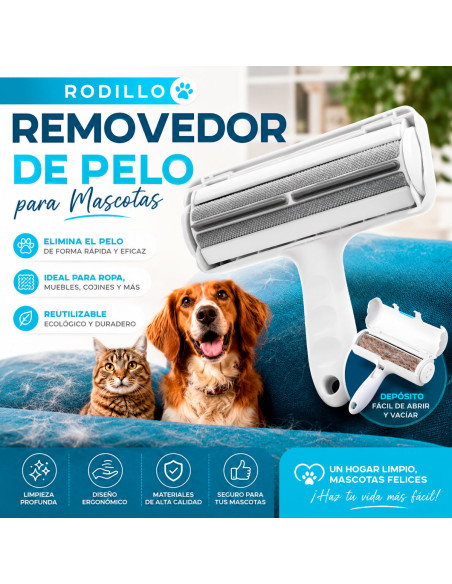
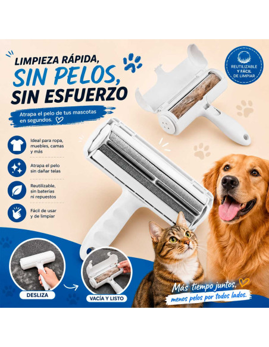
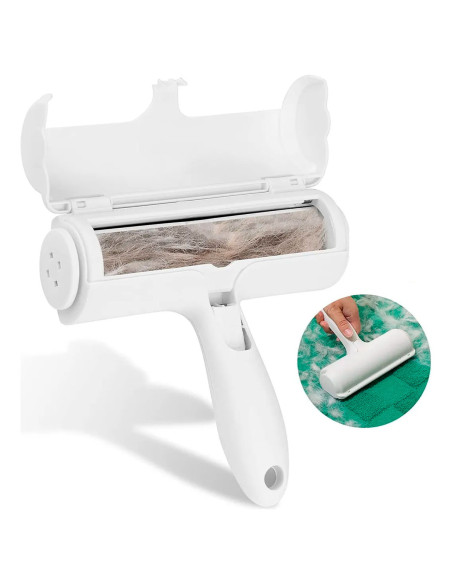
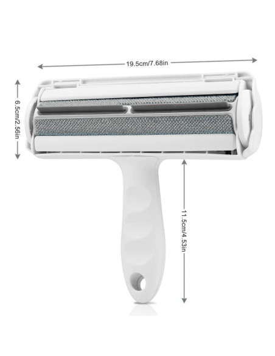
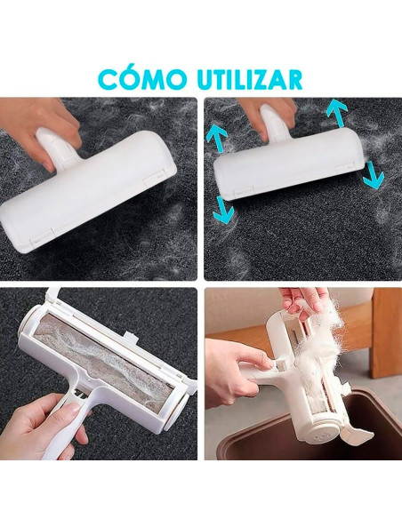

Sofá
Ayuda a retirar pelo suelto de superficies donde descansa tu mascota.
PARA HOGARES CON MASCOTAS
PeloZero™ 2-en-1 ayuda a retirar pelo suelto de sofás, camas, ropa y otras superficies de forma práctica y reutilizable.
QUIERO MI PELOZEROAtención por WhatsApp · Información antes de pagar

SI TIENES MASCOTA, LO CONOCES
Ayuda a retirar pelo suelto de superficies donde descansa tu mascota.
Úsalo para recoger pelo antes de salir de casa.
Una opción práctica para mantener más limpia la superficie.
CONOCE PELOZERO™
PeloZero™ está diseñado para ayudarte a recoger el pelo suelto que queda en diferentes superficies de tu hogar.

TAMAÑO DEL PRODUCTO
Su tamaño permite utilizarlo cómodamente y guardarlo cuando termines de limpiar.

MIRA CÓMO FUNCIONA

Desliza PeloZero™ sobre la superficie.
El mecanismo ayuda a reunir el pelo suelto.
Limpia el rodillo y vuelve a utilizarlo.
MENOS PELO · MÁS TRANQUILIDAD
Una herramienta práctica para quienes comparten su hogar con perros o gatos y quieren mantener sus espacios más limpios.
QUIERO MI PELOZERO
ELIGE TU OPCIÓN
Para probar PeloZero™ en casa.
Una para casa y otra para otra zona.
Para tener una en cada lugar.
Costo y tiempo de envío se confirmarán antes de finalizar el pedido.
PREGUNTAS FRECUENTES
Sí. Está pensado para utilizarse repetidamente y limpiarse después de recoger el pelo.
Está orientado principalmente a retirar pelo suelto de perros y gatos de superficies compatibles.
Depende del destino y método de envío. Se confirmará antes de cerrar el pedido.
Selecciona tu paquete y escríbenos por WhatsApp. Confirmaremos disponibilidad, envío y forma de pago antes de la compra.
Haz tu pedido y recibe la información completa antes de pagar.
QUIERO MI PELOZERO